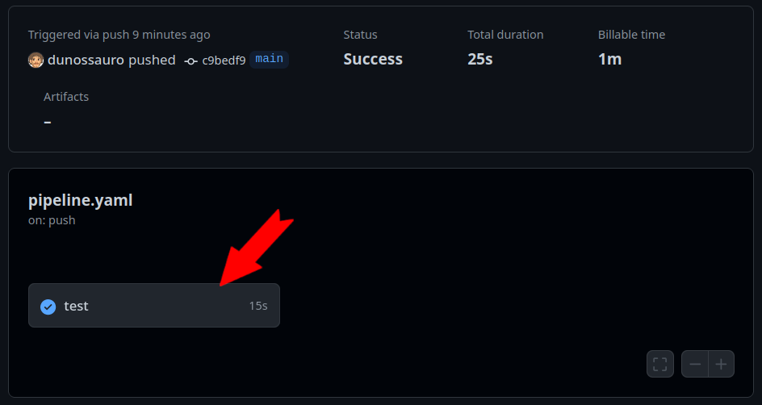
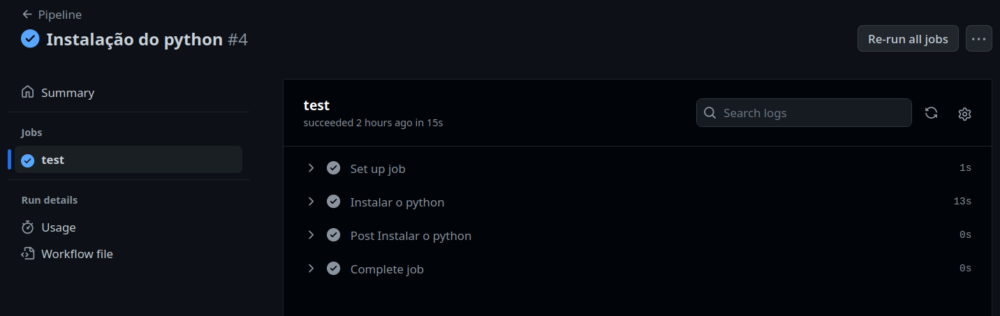
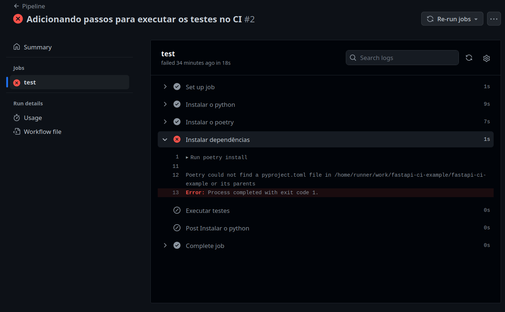
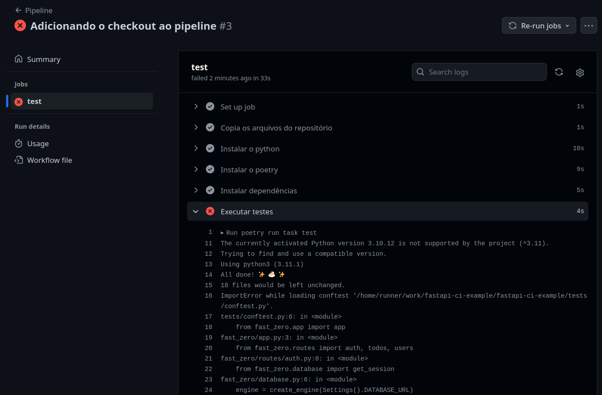
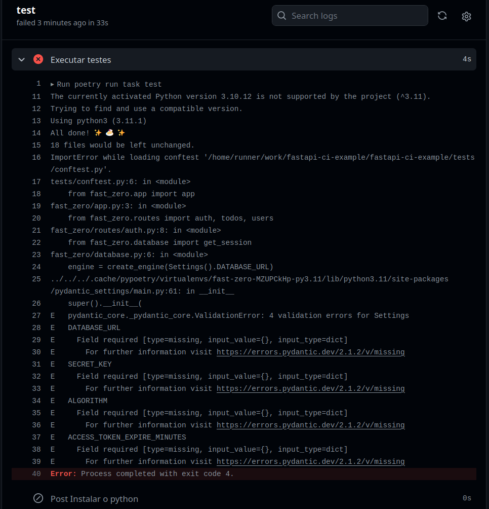
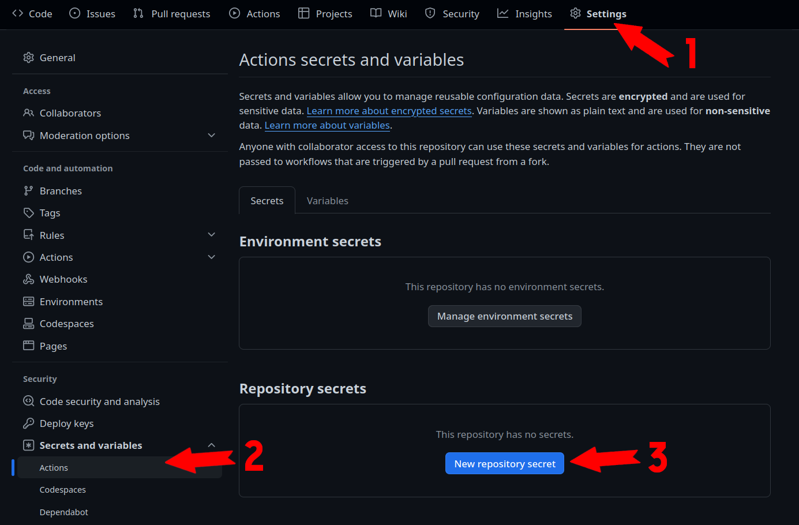
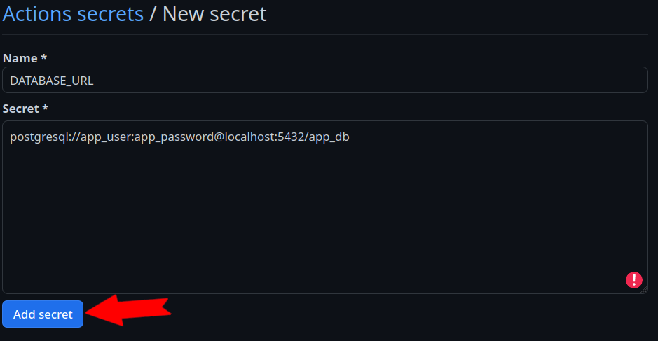
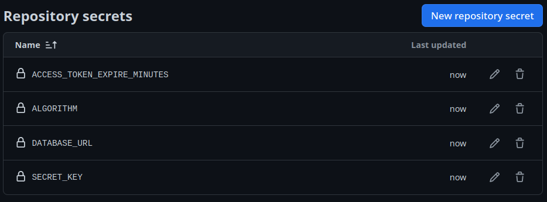
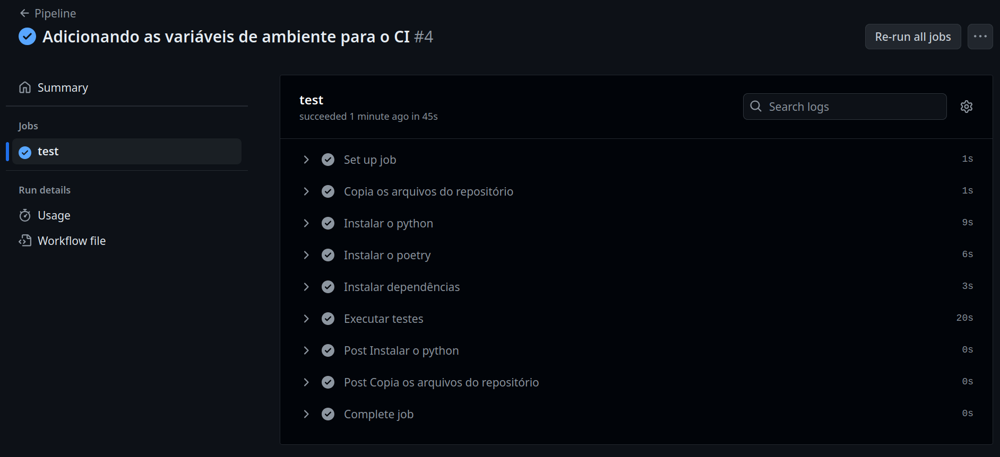

Automatizando los tests con Integración Continua (CI)
Objetivos de la clase:
- Comprender la práctica de Integración Continua (CI) y su importancia en el proceso de desarrollo de software.
- Aprender a usar GitHub Actions para crear workflows de CI que automaticen la ejecución de los tests en cada commit.
- Configurar un pipeline de CI para nuestra aplicación FastAPI que ejecute los tests automáticamente.
- Reconocer la importancia de mantener una cobertura de tests amplia y consistente.
En la clase anterior, preparamos nuestra aplicación para su ejecución en contenedores Docker, un paso fundamental para replicar el entorno de producción. Ahora, vamos a garantizar que nuestra aplicación mantenga su integridad en cada cambio, implementando Integración Continua.
Integración Continua (CI)
Integración Continua (CI) es una práctica de desarrollo que implica la integración regular del código fuente al repositorio principal, acompañada de tests automatizados para garantizar la calidad. El objetivo del CI es identificar y corregir errores de forma temprana, facilitando el desarrollo continuo y colaborativo, ya que en caso de que alguien olvide ejecutar los tests o exista algún problema en la integración entre dos commits o en algún merge, esto será detectado en el momento en que se ejecute la integración continua.
GitHub Actions
Entre las herramientas disponibles para CI, GitHub Actions es un servicio de GitHub que automatiza workflows dentro de tu repositorio. Puedes configurar GitHub Actions para ejecutar acciones específicas — como tests automatizados — cada vez que se hace un commit de código nuevo en el repositorio.
Ejemplo de workflow
Los workflows en GitHub Actions comienzan con la construcción de un entorno (elegir un sistema operativo e instalar sus dependencias) y crear diversos pasos (steps en inglés) para ejecutar todas las etapas que hacemos en nuestra computadora durante el desarrollo. Es una forma de garantizar que el sistema funciona en un entorno controlado. De esta forma, todas las veces que subimos el código al repositorio (hacemos push) este entorno y la secuencia de pasos serán ejecutados.
Por ejemplo, como nuestro sistema usará un sistema operativo GNU/Linux, podemos seleccionar una distribución como Ubuntu para ejecutar todos los pasos de la ejecución de nuestros tests. Esto incluye diversas etapas como preparar la base de datos, leer las variables de entorno, instalar Python y Poetry, etc.
Antes de sumergirnos en la configuración del YAML, vamos a visualizar el proceso de construcción de nuestro entorno de CI con un diagrama de flujo. Este diagrama muestra los pasos esenciales, desde la instalación de Python hasta la ejecución de los tests, ayudando a entender la secuencia de operaciones en GitHub Actions.
flowchart LR
Push -- Inicia --> Ubuntu
Ubuntu -- Ejecuta os --> Pasos
Ubuntu --> Z[Configura las variables de ambiente]
subgraph Pasos
A[Instala la versión 3.11 de Python] --> B[Copia los archivos del repositorio al ambiente]
B --> C[Instala Poetry]
C --> D[Instala las dependencias del proyecto con Poetry]
D --> E[Poetry ejecuta los tests del proyecto]
endCon el diagrama de flujo anterior en mente, nuestro objetivo en esta clase es traducir estos pasos a la configuración práctica en GitHub Actions. Ahora que tenemos una visión clara de lo que implica nuestro workflow, profundizaremos en cómo transformar esta teoría en práctica.
Configurando el workflow de CI
Las configuraciones de los workflows en GitHub Actions se definen en un archivo YAML ubicado en una ruta especificada por GitHub en el repositorio .github/workflows/. Dentro de este directorio podemos crear cuantos workflows queramos. Iniciaremos nuestra configuración con un único archivo que llamaremos pipeline.yaml:
Básicamente un archivo de workflow necesita tres componentes esenciales para ser definidos:
- Un nombre para el workflow (
name); - Una condición de ejecución (la clave
on) para saber qué iniciará el proceso de workflow; y - Un
job: Donde elegiremos un sistema y describiremos la lista de pasos a ejecutar.
En este bloque de código definimos que cada vez que ocurra un push o un pull_request en nuestro repositorio se ejecutará el Pipeline. Este workflow tiene un job llamado test que corre en la última versión de Ubuntu runs-on: ubuntu-latest. En este job llamado test tenemos una lista de pasos a ejecutar, los steps.
El único step que definimos es la instalación de Python:
En este momento, si ejecutamos un commit del archivo .github/workflows/pipeline.yaml y un push en nuestro repositorio, se iniciará un workflow.
Con esto, podemos ir a la página de nuestro repositorio en GitHub y hacer clic en la pestaña Actions, esto mostrará todas las veces que se ejecutó un workflow. Si hacemos clic en el workflow seremos llevados a la página de los jobs ejecutados y si hacemos clic en los jobs, tendremos una descripción de los steps ejecutados:



Esto nos muestra que todo lo que configuramos en el archivo pipelines.yaml fue ejecutado por Actions en el momento en que ejecutamos un push en git.
¿Es posible ejecutar el CI localmente?
Existe un proyecto bastante famoso llamado Act. Permite la ejecución del pipeline de GitHub Actions localmente usando Docker/Podman.
Esto puede ser bastante interesante para evitar muchos commits y llamadas excesivas al repositorio, que suelen demorar un poco.
La instalación varía entre los diversos sistemas operativos y está explicada en esta página de la documentación.
Con la instalación hecha, podemos simplemente ejecutar:
Y el pipeline será ejecutado.
Posibles problemas en Windows
Como cualquier cosa que soporta diversos sistemas operativos, a veces las cosas no funcionan como nos gustaría.
Es necesario crear una red para act:
- Crea una red docker llamada
act-network - Ejecuta los contenedores de act en la red
act-network
Probé con Podman y no funcionó
Como act usa DOCKER_HOST por defecto, necesitas crear un alias pasándole la dirección del sock de podman. Como se explica aquí:
Ahora que tenemos esta visión general de cómo Actions monta y ejecuta workflows, podemos concentrarnos en construir nuestro entorno.
Construcción de nuestro entorno de CI
Para ejecutar nuestros tests en el workflow, necesitamos seguir algunos pasos esenciales:
- Instalar Python: fundamental para ejecutar nuestro código y tests, por ser el lenguaje base de nuestra aplicación.
- Instalar Poetry: ya que toda nuestra aplicación y dependencias fueron construidas con él.
- Instalar las dependencias del proyecto: harán que todas las bibliotecas necesarias estén disponibles para la ejecución de los tests.
- Ejecutar los tests: paso crucial para validar la integridad y funcionalidad del código antes de integrarlo al repositorio principal.
flowchart LR
Python["1: Python instalado"] --> Poetry["2: Poetry instalado"]
Poetry --> Deps["3: Instalar las dependencias vía Poetry"]
Deps --> Testes["4: Ejecutar los tests vía Poetry"]Cada uno de estos pasos contribuye a establecer un entorno de CI robusto y confiable, asegurando que cada cambio en el código sea validado automáticamente, manteniendo la calidad y la estabilidad de nuestra aplicación.
Para ello, debemos crear un step para cada una de estas acciones en nuestro job test. De esta forma:
| .github/workflows/pipeline.yaml | |
|---|---|
| .github/workflows/pipeline.yaml | |
|---|---|
| .github/workflows/pipeline.yaml | |
|---|---|
| .github/workflows/pipeline.yaml | |
|---|---|
Para probar esta implementación en Actions, tenemos que hacer un commit1, para ejecutar el trigger del CI:
git add .
git commit -m "ci: agrega ejecución de tests en el pipeline"
git push
Así, podemos evaluar el impacto de estos pasos en nuestro workflow:

Si analizamos con calma el resultado, veremos que la ejecución de nuestro workflow presenta un error de ejecución. El error está descrito en la línea 12: Poetry could not find a pyproject.toml file in <path> or its parents. Si traducimos de manera literal, la línea nos dijo Poetry no encontró el archivo pyproject.toml en el <path> o en sus padres.
Para solucionar este problema, agregaremos un paso antes de la ejecución de los tests para copiar el código de nuestro repositorio al entorno del workflow. GitHub Actions ofrece una acción específica para esto, llamada actions/checkout. Vamos a incluirla como el primer paso:
| .github/workflows/pipeline.yaml | |
|---|---|
| .github/workflows/pipeline.yaml | |
|---|---|
| .github/workflows/pipeline.yaml | |
|---|---|
| .github/workflows/pipeline.yaml | |
|---|---|
Para probar la ejecución de este paso haremos un nuevo commit para disparar Actions:
Con esto, el error anterior debería resolverse y tendremos los tests ejecutándose en el workflow:

Después de resolver este problema, nos enfrentamos a otro desafío, evidenciado en el bloque a continuación:
ImportError while loading conftest '/home/runner/work/<path>/tests/conftest.py'.
tests/conftest.py:6: in <module>
from fast_zero.app import app
fast_zero/app.py:3: in <module>
from fast_zero.routes import auth, todos, users
fast_zero/routes/auth.py:8: in <module>
from fast_zero.database import get_session
fast_zero/database.py:6: in <module>
engine = create_engine(Settings().DATABASE_URL)
../../../.cache/pypoetry/virtualenvs/fast-zero-IubsqyUK-py3.11/lib/python3.11/site-packages/pydantic_settings/main.py:61: in __init__
super().__init__(
E pydantic_core._pydantic_core.ValidationError: 4 validation errors for Settings
E DATABASE_URL
E Field required [type=missing, input_value={}, input_type=dict]
E For further information visit https://errors.pydantic.dev/2.1.2/v/missing
Error completo en el CI

Al iniciar la ejecución de los tests, encontramos un error relacionado con nuestra clase settings.Settings. Esto ocurrió porque las variables de entorno necesarias, como DATABASE_URL, no estaban definidas en el workflow del CI. Este problema es común cuando las variables del archivo .env, que utilizamos localmente, no se transfieren al entorno de CI.
Configuración de variables de entorno en Actions
Como vimos anteriormente, nuestra configuración de CI encontró un problema debido a la ausencia de variables de entorno. Para resolverlo, utilizaremos una funcionalidad de los repositorios de GitHub llamada 'Secrets'. Los 'Secrets' son una forma segura de almacenar información confidencial, como variables de entorno, de forma cifrada. Son accesibles dentro de nuestro workflow, permitiendo que GitHub Actions utilice estos valores sin exponerlos públicamente.
Definiendo Secrets en el Repositorio
Para definir las variables de entorno como 'Secrets', tenemos dos alternativas. La primera es acceder a la pestaña Settings -> Secrets and variables de nuestro repositorio en GitHub. En este lugar, podemos insertar manualmente cada 'Secret', como URLs de base de datos y claves secretas.
La segunda alternativa es utilizar el CLI de GitHub (gh) para agregar todas las variables de entorno que tenemos en nuestro archivo .env. Esto puede hacerse con el siguiente comando:
Este comando toma todas las variables de entorno del archivo .env y las configura como 'Secrets' en tu repositorio GitHub.
Configurando Secrets por la Interfaz Web
Si prefieres configurar 'Secrets' por la interfaz web de GitHub, sigue estos pasos:
Accede a Settings en tu repositorio GitHub. Luego haz clic en la guía "Secrets and variables". Después haz clic en "New Repository secret":

Para agregar un nuevo secreto en el campo Name colocamos el nombre de una de nuestras variables de entorno. En el campo Secret agrega el valor de una variable. Como, por ejemplo:

Luego haz clic en Add secret.
Después de agregar todos los secretos, tu página de secretos debería verse así:

Implementación en el Archivo YAML
Después de definir los 'Secrets', el siguiente paso es integrarlos a nuestro archivo de workflow (.github/workflows/pipeline.yaml). Aquí, utilizamos una sintaxis especial para acceder a los valores almacenados como 'Secrets'. Cada 'Secret' se mapea a una variable de entorno en el job de nuestro workflow, haciendo que estos valores sean seguros y accesibles durante la ejecución del workflow. Veamos cómo se hace:
| .github/workflows/pipeline.yaml | |
|---|---|
En este fragmento de código, la sintaxis ${{ secrets.NOMBRE_DE_LA_VARIABLE }} se usa para referenciar los 'Secrets' que definimos en el repositorio. Por ejemplo, secrets.DATABASE_URL buscará el valor del 'Secret' llamado DATABASE_URL que definimos. Tan pronto como se active el workflow, estos valores se inyectan en el entorno del job, permitiendo que nuestro código los acceda como variables de entorno normales.
Este enfoque no solo mantiene nuestros datos confidenciales seguros, sino que también nos permite gestionar configuraciones sensibles de forma centralizada, facilitando actualizaciones y mantenimiento.
Actualizando el Workflow
Con los 'Secrets' ahora configurados, necesitamos actualizar nuestro workflow para incorporar estos cambios. Esto se hace mediante un nuevo commit y push al repositorio, que activará el workflow con las nuevas configuraciones.
git add .
git commit -m "ci: agrega variables de entorno al pipeline"
git push
La ejecución del workflow con los nuevos 'Secrets' nos permitirá verificar si los problemas anteriores fueron resueltos.

Y SÍ, todo funcionó como esperábamos 🎉
Ahora en cada nuevo commit o PR en nuestra aplicación, los tests se ejecutarán para garantizar que la integración pueda ocurrir sin problemas.
Código de esta lección
Conclusión
A través de este módulo sobre Integración Continua con GitHub Actions, ganamos una comprensión sólida de cómo la CI es vital en el desarrollo moderno de software. Vimos cómo GitHub Actions, una herramienta poderosa y versátil, puede utilizarse para automatizar nuestros tests y garantizar la calidad y estabilidad del código en cada commit. Esta práctica no solo optimiza nuestro flujo de trabajo, sino que también nos ayuda a identificar y resolver problemas de forma temprana.
En el próximo módulo, el foco será la preparación de nuestra aplicación FastAPI para el deployment en producción. Exploraremos las etapas necesarias y las mejores prácticas para hacer que nuestra aplicación esté lista para el uso en el mundo real, abordando desde configuraciones hasta estrategias de deployment eficaces.